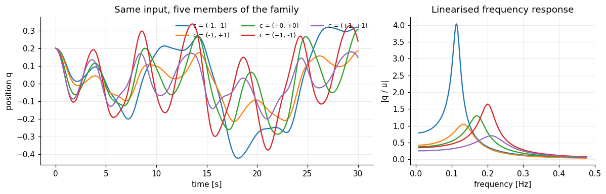
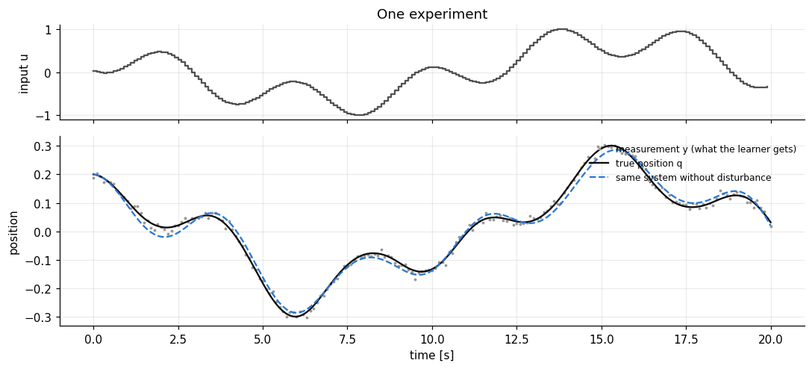

import numpy as np
import matplotlib.pyplot as plt
import dynutils
dynutils.set_style()
rng = np.random.default_rng(dynutils.SEED)
COLOR = dynutils.COLORDT = 0.1 # sampling time [s]
X0 = np.array([0.2, 0.0]) # every experiment starts at rest, deflected by 0.2
NAMES = ["k", "d", "b", "α"]
# Hidden family structure: known to the simulator only.
_ETA0 = np.array([1.20, 0.32, 0.90, 1.00])
_M = np.array([[0.55, 0.12], [0.07, 0.11], [0.16, -0.09], [0.30, 0.45]])
_SIGMA_Y, _SIGMA_W, _RHO = 0.01, 0.01, 0.8 # sensor noise, disturbance strength, disturbance colour
def actuator(u):
return 0.3 * np.tanh(np.asarray(u) / 0.6)
def sample_system(rng, context=None):
# Draw a new member of the family (the 'secret' ground truth).
c = rng.uniform(-1, 1, 2) if context is None else np.asarray(context, float)
eta = _ETA0 + _M @ c + rng.normal(scale=[0.015, 0.004, 0.008, 0.04])
return dict(eta=eta, context=c,
gamma=0.035 + 0.012 * rng.uniform(), # unmodelled quintic spring
bias=0.006 * c[0] + 0.002 * rng.normal()) # unmodelled force bias
def simulate(system, u, rng, noise=True):
# True plant. Returns (true positions, noisy position measurements), length len(u)+1.
k, d, b, a = system["eta"]
u_delayed = np.r_[0.0, np.asarray(u, float)[:-1]]
(q, v), w = X0, 0.0
qs = [q]
for ut in u_delayed:
if noise:
w = _RHO * w + _SIGMA_W * rng.normal()
acc = (-k * q - d * v + b * actuator(ut) - a * q**3
- system["gamma"] * q**5 + system["bias"] + w)
v = v + DT * acc # semi-implicit Euler
q = q + DT * v
qs.append(q)
qs = np.array(qs)
y = qs + (_SIGMA_Y * rng.normal(size=qs.size) if noise else 0.0)
return qs, y
def multisine(T, rng, n=3, fmin=0.02, fmax=0.8):
# Random admissible input: a sum of n sines with random frequencies [Hz] and phases, peak 1.
t = DT * np.arange(T)
f = np.exp(rng.uniform(np.log(fmin), np.log(fmax), n))
s = sum(np.sin(2 * np.pi * fi * t + rng.uniform(0, 2 * np.pi)) for fi in f)
return s / np.abs(s).max()systems = [sample_system(rng, c) for c in [(-1, -1), (-1, 1), (0, 0), (1, -1), (1, 1)]]
u_demo = multisine(300, rng, n=5)
t = DT * np.arange(301)
omega = np.linspace(0.05, 3, 400)
fig, (ax1, ax2) = plt.subplots(1, 2, figsize=(11, 3.6), gridspec_kw=dict(width_ratios=[1.8, 1]))
for s in systems:
q, _ = simulate(s, u_demo, rng, noise=False)
ax1.plot(t, q, lw=1.5, label=f"c = ({s['context'][0]:+.0f}, {s['context'][1]:+.0f})")
k, d, b, _ = s["eta"]
ax2.plot(omega / (2 * np.pi), 0.5 * b / np.abs(k - omega**2 + 1j * d * omega), lw=1.5)
ax1.set(xlabel="time [s]", ylabel="position q", title="Same input, five members of the family")
ax1.legend(ncol=3, fontsize=8, loc="upper right")
ax2.set(xlabel="frequency [Hz]", ylabel="|q / u|", title="Linearised frequency response")
plt.tight_layout(); plt.show()
The same input produces clearly different motions. The frequency responses show why: the members differ in resonance frequency (roughly 0.1–0.25 Hz, i.e. a period of 4–10 s), in how peaked the resonance is, and in gain. A model of the average system will therefore mispredict most individual systems. Keep the resonance band in mind; it returns in chapter 06.
2. What the learner sees, and what it does not
In the laboratory, the learner can choose the input u_t and read a position sensor y_t = q_t + \nu_t. It does not see the velocity, the disturbance, or the coefficients.
| Quantity | Simulator knows | Learner receives |
|---|---|---|
| coefficients \eta, hidden context c | ✔ | ✘ |
| input u_t | ✔ | ✔ (it chooses it) |
| position q_t | ✔ | only noisy y_t |
| velocity v_t, disturbance w_t | ✔ | ✘ |
| quintic term, bias | ✔ | ✘ (not even in its model) |
The learner's model is the equation above without the unknown extra effects:
\hat v_{t+1} = \hat v_t + \Delta t\,\big(-k\hat q_t - d\hat v_t + b\,\varphi(u_{t-1}) - \alpha \hat q_t^3\big),
\qquad \hat q_{t+1} = \hat q_t + \Delta t\,\hat v_{t+1}.
This mismatch is deliberate. Real models are always wrong in some way, and a method is only interesting if it degrades gracefully when that happens.
s = systems[2]
u = multisine(200, rng)
q_true, y = simulate(s, u, rng)
q_clean, _ = simulate(s, u, rng, noise=False)
t = DT * np.arange(201)
fig, (ax1, ax2) = plt.subplots(2, 1, figsize=(10, 4.6), sharex=True, gridspec_kw=dict(height_ratios=[1, 2]))
ax1.step(t[:-1], u, where="post", color=COLOR["reference"], lw=1.5)
ax1.set(ylabel="input u", title="One experiment")
ax2.plot(t, y, ".", ms=3, color=COLOR["measured"], label="measurement y (what the learner gets)")
ax2.plot(t, q_true, color=COLOR["truth"], lw=1.5, label="true position q")
ax2.plot(t, q_clean, "--", color=COLOR["context"], lw=1.5, label="same system without disturbance")
ax2.set(xlabel="time [s]", ylabel="position"); ax2.legend(loc="upper right", fontsize=8)
plt.tight_layout(); plt.show()
print(f"RMSE(true position, disturbance-free response) over this experiment: "
f"{np.sqrt(np.mean((q_true - q_clean) ** 2)):.4f} (sensor noise sd alone: 0.01)")

RMSE(true position, disturbance-free response) over this experiment: 0.0165 (sensor noise sd alone: 0.01)
The gap between the solid and the dashed line is caused by the coloured disturbance alone. No model can predict it in advance, so we will judge models by how well they predict the system's disturbance-free response to a new input: this measures the quality of the model, not our luck with the noise.
Exercises
Exercise 1: A stiffer, less damped corner of the family
Draw 200 random contexts c uniformly in [-1,1]^2, compute the corresponding \eta with
sample_system(rng, c), and scatter the resulting natural frequency \sqrt{k} against the damping
ratio d/(2\sqrt{k}). Which corner of c-space gives the most lightly damped, highest-frequency
systems?
Solution
cs = rng.uniform(-1, 1, (200, 2))
etas = np.array([sample_system(rng, c)["eta"] for c in cs])
k, d = etas[:, 0], etas[:, 1]
wn, zeta = np.sqrt(k), d / (2 * np.sqrt(k))
plt.scatter(wn, zeta, c=cs[:, 0], cmap="viridis", s=12)
plt.colorbar(label="c1"); plt.xlabel("natural frequency ωₙ"); plt.ylabel("damping ratio ζ")
Both k and d load mostly onto c_1 (row 1 of M is [0.55, 0.12], row 2 is [0.07, 0.11]), so c_1 \to +1 gives the stiffest, highest-frequency systems, and since k grows faster than d along c_1, those same systems end up the most lightly damped.
Exercise 2: How much does the disturbance matter?
For one system, simulate the same input 50 times with noise=True and once with noise=False.
Plot the disturbance-free trajectory against the envelope (min/max across the 50 noisy runs). At
what fraction of the 20 s experiment does the spread exceed the sensor noise alone (\sigma_y=0.01)?
Solution
s = sample_system(rng); u = multisine(200, rng)
clean, _ = simulate(s, u, rng, noise=False)
noisy = np.array([simulate(s, u, rng)[0] for _ in range(50)])
spread = noisy.std(axis=0)
print(f"fraction of samples with spread > sensor noise: {(spread > 0.01).mean():.0%}")
The disturbance is coloured (ρ=0.8), so it builds up over a run rather than averaging out sample by sample; the spread across repeats is usually well above 0.01 for most of the trajectory, confirming that the gap in the figure above is dominated by the disturbance, not by sensor noise.
Key takeaways
- A "family" here means a shared nonlinear equation with a two-dimensional hidden design space c; the physical coefficients \eta are a noisy affine function of c.
- The learner only ever sees a chosen input and a noisy position measurement, never the velocity, the disturbance, or the coefficients, and its model omits two effects the true systems have.
- Because no model can be perfect here, every chapter judges models by predicting the disturbance-free response to a new input, which isolates model quality from measurement luck.
Next: 02 · Identifying One System From Scratch. The classical baseline: fit all four coefficients of one system from one experiment, and see where it succeeds and where it struggles.